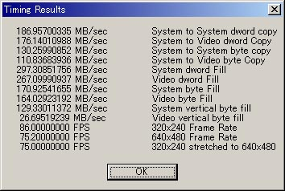

The deep inside of Windows 〜 Windowsの深淵
Ｌｅｓｓｏｎ １．超高速描画の謎【前編】 '01/10/04
走り書きですんません、、時間無いのです。きちんとデータをとりなおして、書き直したいのですが、その時間も無いので、もうこのまま載せちゃいます。読みにくくってごめんなさい。
通常のゲームにおいては、描画処理が、処理全体の８０％以上を占めると言っても過言ではありません。そのわりには、Windowsで、どうやれば高速な描画ができるのか、実際に比較して示してある書籍が皆無です。私も断片的に、ｒｓｐ（スーパープログラマへの道）で書きましたが、測定値を示すには至っていなかったのです。だから、同業者のしとたちから、詳しく書け書けとうるさく催促されています＾＾；
しかし、実は、いま、ここで詳しいことを書いているほど時間は無いのです。私は、某麻雀ソフトで、DIB描画の使用を試みました。（実際にこのゲームのプログラムを担当したのは、うちのサブプログラマですが） これのwrapperクラスは、yaneSDK2ndのCDIBDraw / CDIB32なので、そちらも合わせてご覧ください。これは、32bppのDIBを作成し、描画するというものです。ピクセルフォーマットが、32bpp固定なので、専用のルーチンを書くのが容易で、多彩なエフェクトを用意してあります。
ところが、これが、非常に遅い、というのです。うちのマシンで調べても、そんなに遅いという気はしないのですが．．。しかし、Celeron 600MHzですら、こちらが想定している最低フレーム30FPSを達成しないことがあるようです。Celeron 300MHzで30FPSに達しているのに、そんな馬鹿なって感じです。仕方ないので、某麻雀の次回作に合わせて、これを可及的すみやかにリライトしなければならないのです。クライアントが言うには、「Celeron266MHzで快適に」です。というか、それをやると言っていた9月末という期日は、すでにオーバーしており、こんなページを悠長に書いている場合でも無いのですが．．＾＾；
「車輪の再発明をするな」というソフトウェア工学の原則に従い、時間も無いことなので、自分で実験するのは、なるべく、はしょって、参考になりそうなページを紹介します。
まずお勧めリンクから紹介させていただいている、あぷりこっとくらぶのここのページに詳細比較があります。このページでは言外にしか書かれていませんが、この測定値を見れば、さまざまなことが読みとれます。
１．メモリ間の転送は、メモリバスの転送限界がボトルネックとなるのでCPUクロックがあがったところで、あまり値は向上しない？
つまり、アセンブラで、カリカリに書こうが、C++でへろへろに書こうが、結局のところ、値にそれほどの有意差は認められないということです。たとえば、ＭＭＸレジスタは６４ビットレジスタなので、ＭＭＸレジスタを用いてメモリコピーをすれば速くなるかといえば、そうとは限らない無いということです。（実際には、コーディングの仕方によって、メモリキャッシュのタイミングが微妙に変わるので、測定値は多少変わってきますが）
つまり、ビデオカードのアクセラレーションに頼らない場合、どう頑張っても、バスの転送限界を超えることは出来ないのですが、そのバス限界というのは、かなり低い値なのです。
640*480*32bppのサーフェースは、約１．２ＭＢ（1228800バイト）です。画面を１回更新するためには、全画面更新方式（毎フレーム、画面を１から構築する方式）ならば、バックサーフェースからセカンダリサーフェースへ転送し、そのあと、セカンダリサーフェースからプライマリサーフェースへ転送しなければなりません。つまり、１．２ＭＢ×２です。６０ＦＰＳを出すためには、画面構築のための転送だけで147MB。実際、システムメモリ間の転送で、こんな値は、現状のハード（注：PentiumIIIの1GHzとかではなく、いま動作保証しなければならないCerelon 266MHzのこと）では、出せないと考えたほうが良いのです。
２．ＤＩＢの場合、アクセラレーションは期待できない
上述のページでも書いてありますが、DIB転送の場合、ビデオカードによっては、ハードウェアアクセラレーションは利かないのです。というか、アクセラレーションが利くほうが稀なのです。フルカラー、VGAモード(640*480)で、30FPSという実験結果が出ていますが、この値は、上記１．からもわかるようにCPU速度には、あまり依存しないのです。Pentium 233MHzであっても、Celeron 600MHzであっても、これくらいの値しか出ないのです。それはまったく変わらないのです。
つまり、「どうして、うちはCeleron 600MHzなのに快適に動かねーんだよ！一体、どんなマシンスペックなら、快適に動くんだよ！」と怒鳴り込んでこられても（笑）、メモリ転送はＣＰＵクロックで決まるファクターでは無いのです。これが重要です。
３．ハードウェアアクセラレーションが掛かるときは、恐ろしく速い
それなのに、たかだかPentium2の266MHzで、True Color(32bpp)で、151FPSという数字を記録しています。DirectDrawを利用しているわけではありません。コンパチブルなDC間の、通常の描画(BitBlt)においてです。この結果を見ていると、「近年CPUクロックが高速化してきているからDMA転送を利用する意味はありません」と誰かが言っていたのは、一体、何だったのかとただただ呆然となります。これには、バスマスタリング技術の発展が大きく寄与しているのだと思います。
また、このページには、
| また別の実験では元のＤＣと画面の色が一致していないと著しく速度低下をすることがわかっています。 よって実際に使用する時はデータと表示する画面をそろえて１００％の アクセラレーションを期待するしかないようです。 |
と書かれています。これについて詳しいことは、ZOBの速水 祐氏の「Win32スーパーテクニック上巻」（ASCII／しかし下巻はいつ出んねん！ヽ(`Д´)ノ）に、書かれています。
４．メモリ間の転送でも、ハードウェアアクセラレーションが期待できる
ハードウェアアクセラレーションが利くのは、ビデオメモリ間だけではありません。
| この結果からメモリ間でもアクセラレーションが働いていることが実証できました。 |
とあるように、メモリ間ですら、アクセラレーションが掛かるようです。これを利用すれば、大量のメモリコピーを行なうときには、ビデオカードのハードウェアアクセラレーションが使えるのでは無いか、などと不純な考えが頭のなかによぎったりもします（笑）
まあ、結局、以上の１．〜４．の結果を、DirectDrawの場合に適用してみると、
５．システムメモリにとったDirectDrawSurfaceであっても、アクセラレーションは期待できる
のです。システムメモリ上のサーフェース⇒ビデオメモリ上のサーフェースは、ときによって少し遅いかも知れませんが、原則的に、アクセラレーションを期待できるのではないでしょうか？
よって、アクセラレーション機能を切る（ＯＦＦにする）ためには、DirectDrawをHEL(Hardware Emulation Layer)モードで動かさなければいけません。システムメモリ上にサーフェースを確保しただけでは、アクセラレーションは生きつづけるのです。
アクセラレーションを何のために切る必要があるのか？と思われるかも知れません。それは、ひとつは、ドライバのバグ対策であり、もう一つは、アクセラレーションが掛かったほうが遅いということがあるのです。
これについては、お勧めリンクから紹介させていただいているさ〜さんのＰＥＡＣＥ ＣＯＤＥの第３４回が参考になります。しかし、この測定結果は、エミュレーションのほうが平均して速いという結論になっており、私としては、この部分にやや疑問が残ります。なぜなら、上の１．から、ハードウェアアクセラレーションが掛からない限り、メモリバスの転送限界を超えることは出来ず、その値は、True Colorモードで30FPSに満たないこともわかっています。しかし、さ〜さんが、こんなベンチの測定を誤るとも考えられません。（ひょっとしたら、640x480、8bppなので、サーフェースは300Kちょい,K6-2のように二次キャッシュが512KBあると、どうなるのか？とは思うのですが） これについては後述します。
あと、DirectDrawとDIBSectionとの比較としては、ainさんのページのDirectDraw vs DIBSectionが詳しいです。ここにも書いてあるように、DirectDrawは遅いというよりは、DirectDrawは、メモリをlock〜unlockが非常に遅いビデオカードが存在する（実際は、そのあとメモリに書きこむのが遅いのです。たぶん、フラットメモリハンドラのせい．．）ので、実用上はDIBSectionを使いなさい、という内容のものです。しかし、通常のDIBSectionでは、速いマシンをもってしても、せいぜい30FPSしか出ないことは、あぷりこっとくらぶの実験結果からもわかっていますので、それでは使えないのです。
確かに、今後、半透明や、アンチェリ処理等は必須でしょう。だからDirectDrawを捨てなさい、、ainさんのページは、そうとも取れる内容です。私も、１年ぐらい前に、そうだと思ったからこそ、私は半年近く費やして、DIBクラスを作ったのですが、どうも、それでは描画フレーム数が命となるタイプのゲーム（リアルタイムのアクションｅｔｃ．．）には使えないのでは無いかというのは、ここまで読んできてくださったみなさんならば、もうおわかりでしょう。リアルタイムのアクションでなくとも、描画フレームが遅ければ、それが商用ソフトであれば「どうしてこんな単純なゲームなのに、これだけしか速度が出ないの」とか、さんざん言われます。ゲームが単純であるかどうかなんて、何の関係もなく、単純に描画がボトルネックになっているなんてことは、誰もわかっちゃーくれません(ρ_；)ﾉ
ところで、Direct3Dを利用すれば、半透明転送、回転等の描画が可能になります。ひとつの解決策としては、それもアリでしょう。ただ、Direct3DはDirect3Dで、その他のいろいろ問題がてんこもりなので、たかだか２次元の描画に、という気もしないでもないです。また、３Ｄの機能を２Ｄに利用しているだけなので、どうにも、自由度は低くなります。
そうなると、本当に、低スペックなマシンで60FPSとかで動作させる必要があるのならば、とびでばいんのように完全に２５６色モードで作ってしまうしか無いのでしょうか．．？
と、ここで、最初に戻って、コンパチブルなＤＣ間の転送がそんなに速いのならば、現在の画面モードとコンパチブルなサーフェース(DDB:Device Dependent Bitmap)、そこに書いていけばいいんでないですか？と言われるかも知れません。しかし、その場合、
ａ．各画面モードごとに処理ルーチンが異なる
ｂ．ピクセルを直接メモリポインタとしていじれるのか？
の二つの問題が発生するのです。ａ．に関しては、どうせメモリアクセスがボトルネックになるので、C++で書いてある程度遅くても良いのならば、functorを使う実装にすれば良いでしょう。
ｂ．に関しては、後述します。
ところで、DIBSectionを現在の画面ＤＣのピクセルフォーマットとコンパチなように作成すれば、ハードウェアアクセラレーションが利用できるのか、というのも気になりますがCreateDIBSectionでピクセルフォーマットを指定する方式では、32bppモードで、コンパチブルなＤＣからの転送より遅いことを考えると、どうも、それは期待できないように思います。
また、BitBltとSetDIBitsToDevice(DIBからDDBへの転送)との転送能力については、お勧めリンクから紹介させていただいているSYNさんの比較資料が非常に参考になります。これは、すなわち、DIB⇒DIB,DIB⇒DDBを比較されているのですが、このコーナーの趣旨から欲を言えば、DDB⇒DDBについても知りたいのです。これに比べて、DIB⇒DIBやDIB⇒DDBが圧倒的に遅いのではないかということを確認したいのですが。あと、256×256サイズのサーフェースでは、２次キャッシュが微妙に絡んできて、結果は、ちょっと怪しい気がします。
それは、ともかく、私も、一応、測定してみました。1000回測定での１回の平均。単位は[ms]です。
Duron 700MHz + Mator Grphics Millennium G200 AGP Windows2000SP2
DIB(32bpp) -> DIB(32bpp) メモリ転送
6.37
DIB(32bpp) -> DIB(32bpp) BitBlt(DC経由)
8.73
DIB(32bpp) -> VRAM BitBlt(DC経由)
画面モード 8bpp 16bpp 24bpp
32bpp
18.39 5.46 6.64 9.51
DIB(16bpp) -> VRAM BitBlt(DC経由)
画面モード 8bpp 15bpp 16bpp 24bpp
32bpp
10.2 4.34 4.4 9.1 9.3
※ コメント：
ＤＣ間のＤＩＢ転送は、アクセラレーションがかかるどころか、むしろ素直にメモリコピーするより遅くなっている。
（赤字の部分は、アクセラレーションがかかったのかも知れない）
8bppモードへの転送の数字が大きいのは、２５６色パレットに対して減色変換をするコストと思われる。
Celeron 466MHz + ATI 3D Rage LT Pro Windows2000SP2
DIB(32bpp) -> DIB(32bpp) メモリ転送
11.7
DIB(32bpp) -> DIB(32bpp) BitBlt(DC経由)
11.6
DIB(32bpp) -> primary surface(DDB) BitBlt(DC経由)
画面モード 8bpp 16bpp 24bpp 32bpp
37.96 13.3 10.5
8.83
DIB(16bpp) -> primary surface(DDB) BitBlt(DC経由)
画面モード 8bpp 16bpp 24bpp 32bpp
19.6 7.45 18.1 16.1
※ コメント：
上記マシンで、32bppのDIBを使った場合の１フレームを構築するのに必要な時間は、DIB間の転送＋画面へのBitBltだから、11.7
+ 8.83=20.53。描画以外の処理はしないとして、このとき1000/20.53≒48.7ＦＰＳ実際は、他の処理にも必要だと、画面に素材の貼り付けも必要なので、そういうところにマシンパワーが食われて、30FPSぐらいになるのは、十分納得のいく数字だ。
後者のマシンで、16bppのDIBを使った場合、同様に、11.7/2 + 7.45 = 13.3で1000/13=75.18FPS、だいたい50FPSぐらいは出るという計算になる。
以上の測定結果から、16bppのDIBにすれば、スピードは倍になるのではないかというのは、少し甘そうです。たとえば、16bppのDIBから32bppに転送すると、余計に時間がかかっています。画面モードが16bppモード(high color)で、16bppのDIBを使うのならば、ソフト的に転送するときは、ほぼ倍の速度になると考えられるので、倍近い値は期待できるのでしょうけれど．．．。
また、この結果を見る限り、Pixelフォーマットとしては適合しているはずなのに、アクセラレーションが利いていません。ためしに、NT/2000系でならCreateDIBSectionでピクセルフォーマットを指定できるので、それを指定してみたのですが、むしろ遅くなってしまいました。これは、コンパチブルなＤＣとみなされていないからでしょう。（それがドライバ依存なのかどうかは、複数マシンで実験していないのでわかりません）
よって、画面モードが16bppのときは、16bppのDIBを作る。それにより、一応は、高速化がはかれることがわかりました。32bppのときは、32bppのDIBを作ります。（画面モードに応じて、作り直すのでは、一体、何のためのDIBだかよくわかりませんが．．）
設計としては、IDIBインターフェースを継承した、CDIB16とCDIB32を用意して、こいつのproxyクラスCDIB16_32を用意して、画面モードが切り替わったときは、それをproxyオブジェクトを摩り替えれば良いということになりそうです。
CDIB32はもう既に完成しているわけで、あとはCDIB16を用意するだけで良いなら、簡単ですね＾＾；
これもひとつの解決法として、アリでしょう。
ところが、私の目標としては、これでは、不十分なのです。DirectDrawSurfaceも合わせて、もっと速い方法を模索してみましょう。
まず、上で測定したひとつ目のマシンで、DDB -> DDB(compatible DC)のBitBltをテストしてみたところ、
画面モード 8bpp 16bpp 24bpp
32bpp
MEM >MEM 0.73 1.67 2.51 3.92
MEM >VRAM 0.80 2.07 3.16 4.07
うひょーーすげーー、、こんなに速いのか．．．。
これにくらべたら、上の16bppの4.4なんて、アクセラレーションかかってるうちに入んないよ。入んない（笑）
ひょっとしたら、DirectDrawより速いかも．．
というわけで、DDB(CreateCompatibleBitmapで作ったビットマップ)を直接イメージへのポインタをもらって、ぐりぐりできるのか、という部分に焦点が行くように思うのですが．．こたえ。できません。CreateCompatibleBitmapで適合DDBを作ったとき得られるのは、HBITMAPなわけで、こいつから、Pixel Formatと、イメージへのポインタはわからないのです！
|
BITMAP Bmp; |
とかやっても、p == NULL です。なめとんのかー！って感じです．．。こいつさえ、正しいメモリポインタを返してくれるのならば、もう、この時点で実験は終了＆制作開始！だったと思うんですけど．．．
それでは、CreateBitmapで現在の画面bppと同じサーフェースを作ったときは、これは、CompatibleなBitmapとみなされますか？
画面モード 16bpp 24bpp 32bpp
MEM >MEM 2.89 2.77 8.33
MEM >VRAM 4.35 4.34 9.09
DIBのDC経由より、幾分マシな数字ですが、それにしても上のCompatibleBitmapの値とは、ずいぶん違います。完全な（？）適合DDBであるとみなされていないのでしょうか？（まあ、この値でも、一応、我慢は出来る範囲なのですが）
他にDDBを作るAPIは、CreateBitmapIndirectぐらいしか残されておらず、これは手詰まり模様です。
一応、確認のため、CreateBitmapIndirectを使ってベンチをとってみましたが、CreateBitmapと値はまったく変わりません。
しかし、ということは．．適合DDBのための何か条件を忘れているのでしょう。前述の速水 祐氏の「Win32スーパーテクニック上巻」には、256色モードにおいて、CreateDIBSectionでパレット合わせを行なって、適合パレットオブジェクト(ここで言う適合DDB)を作成し、ハードウェアアクセラレーションを利かすことに成功しています。これは256色モードだからでしょうか．．？
いや、私には、単にパレット変換しない、というだけの高速化のようにも思えます。アクセラレーションが働いたとは考えにくいのです。それに、上のCreateCompatibleBitmapとCreateBitmapとの違いですが、前者は、メモリポインタをわざと、子供の手の届かないところに隠しているような気がするのです。ひょっとしたら、容易にいじってはいけない聖域みたいなところがあって、そこに画像を置いておけば超高速転送が出来るだとか。（＜何わけわからんことゆうてんねんヽ(`Д´)ノ）
ついでに調べてみたのですが、DirectDrawSurfaceは、現在の画面とコンパチな、DDBのはずなのですが、GetDCして、描画しようとすると、恐ろしく遅いんです。こうなってくると、何をもってComatibleBitmapと判定しているのか、さっぱりわかりません。
さて、ここに来て、SYNさんから、お助けのメールが届きました。参考ソースもついてて．．ほんと感激です。
男っ前なSYNさん、ありがとうございます！(ρ_；)ﾉ
そのメールの中で、ひとつだけ気になる点があったので、紹介させていただくことにします。
| （上のDDB -> DDB(compatible DC)のBitBltの値は） memtime.exeで計測した値とも大体一致します。 何が言いたいのかというと、アクセラレーションとかじゃなくて、 ただのメモリコピーの速度なんじゃないかと。 |
不勉強で、memtimeって、知りませんでした。便利そうなツールですね。調べてみると、
http://www.geocities.co.jp/SiliconValley-PaloAlto/9441/cyrix_iii.html
に詳しく書いてありますね。昔のDirectXについてたみたいですね．．。どうして、こういう有用なものを次から次へと闇に葬るかな．．。＞Microsoft
さてさて、、これで調べてみると、、

私は、上で640*480の32bppのメモリ間コピーで6.37ms、アクセラレーション時に3.92msと書きました。1000/6.37ms*640*480*4=192.9MB/sec。上のSystem to System dword copyの値とほぼ一致します。3.92msの場合、313.5MB/sec。念のため、何度か調べなおしてみたんですが、やはり、この値は、速いような気がします。CreateBitmapの値のほうは、5.52msですから、こちらは、アクセラレーションが掛かったというほどは速くない、という気もします。というか、CreateBitmapのMEMからVRAMへの転送、9.09msというのは、135.2 MB/secなわけで、アクセラレーションがかかるどころか、この176.14MB/secに負けてるんですが．．(ρ_；)ﾉ CreateBitmapは逝って良しです。（笑）
MSDNのCreateBitmapの説明を見ると．．．
|
CreateBitmap 関数は、カラーのビットマップを作成する目的でも利用できます。しかし、パフォーマンス上の理由で、CreateBitmap はモノクロームのビットマップを作成する場合にのみ使い、カラーのビットマップを作成する場合は、CreateCompatibleBitmap 関数を使うべきです。CreateBitmap が返したカラーのビットマップをデバイスコンテキストで選択する場合、システムはそのビットマップが、そのデバイスコンテキストの形式に一致していると保証しなければなりません。一方、CreateCompatibleBitmap は引数としてデバイスコンテキストを受け取るので、指定されたデバイスコンテキストと同じ形式を持つビットマップを返します。この理由により、CreateBitmap が返したカラーのビットマップに対して、それ以降 SelectObject を呼び出す場合よりも、CreateCompatibleBitmap を使って同等の処理を行う方が高速になります。 |
使ってはいけなかったらしい．．。(ρ_；)ﾉ
ええい、それなら最後の手段！すべてのDirectDrawSurfaceをシステムメモリ上に確保するというのはどうですか？メモリ上に確保するのであれば、ピクセルフォーマットは指定できますし、解像度切り替えのときにロストしないはずで、DirectDrawなので、ひょっとすればビデオカードのアクセラレーションが利くかも知れません。この方法は、古くからDirectDrawのバグ対策のため、ときどき用いられてきている手法で、お勧めリンクから紹介させていただいているKa-Syaさんのページにも少し説明があります。一応、DirectDrawSurfaceなのでHDCも取得できます。ということで、システムメモリ上のサーフェースの転送実験！
画面モード 8bpp 16bpp 24bpp
32bpp
VRAM>VRAM 0.81 1.79 2.57
4.25
MEM >MEM 1.60 4.23 6.57
8.40
MEM >VRAM 2.11 4.23 6.36 8.92
もう何が言いたいかわかりましたね。最大にアクセラレーションが利くと思われるVRAM間で、CompatibleBitmapでの転送とほぼ同じ。メモリ間は、普通にコピーするより遅いという、非常に泣かせる結果が出ました。こんな結果を見せられたら「近年はCPU性能の向上により〜」と即断しかねません。一体、この結果は、何を意味するんでしょうか。さ〜さんが、DirectDrawはエミュレーションのほうが速いと言われていた理由がなんとなくわかるような気がしてきます。もう、DirectDrawなんて要りません。高速なメモリコピー。欲しいのは、それだけです。念のため、さきほどの実験で使った、遅いほうのマシンでも試してみることにしました。
実験に使ったソース付けておきます。あぷりこっとくらぶのサンプルをちょっとばかし借用させていただいています。diw_1_src.lzh コンパイルにはyaneSDK2ndが必要です。くちゃくちゃにしてしまったので、メモリリークしてます＾＾；；
画面モード 16bpp 24bpp 32bpp
VRAM>VRAM 2.94 4.92 6.62
MEM >MEM 5.71 8.47 10.86
MEM >VRAM 3.52 5.23 6.69
でした。
あっ、、謎はすべて解けた！！犯人はあいつしかいない！と、書いていて、凄いことに気付きました。DDBに対する、CreateCompatibleBitmapは、ビデオメモリ上に確保されることがあるのでは無いでしょうか！？イメージポインタを得られないのも、ひょっとすると、それが原因では無いでしょうか。測定値を見ていると、DirectDrawSurfaceのVRAM間の転送速度と酷似しています。それ以外のメモリ間の転送には、SYNさんが言われるように、一切アクセラレーションはかかっていないということなのかも知れません。
まとめます。ここで得た結論は、
１．システムメモリ上にとったDirectDrawSurface間のコピーは、通常のメモリコピーよりやや遅い。
２．CreateCompatibleBitmapしたものをBitBltするのが最速。詳しくは実験してませんが、ひょっとすると、これはシステムメモリ上ではなく、ビデオメモリ上に確保されているような気がしなくも無いです。（大量のDirectDrawSurfaceを使っていると、著しく速度が低下したので）
３．さもなくばCreateBitmapするのが良い。
４．DIBはアクセラレーションが掛からないと考えたほうが良い。特に、ビデオメモリへの転送がかなり重い。ピクセルフォーマットの変換に時間がかかっている模様。
５．メモリ上のDirectDrawSurfaceから、VRAMに転送するのは、CreateBitmapと、ほぼ同等。
ということで、16bppのDIBに見切りをつければ、道は２つ。
１．CreateBitmapで、現在の画面のbppと同じものを作成し、現在の画面のピクセルフォーマットを調べて、それと同じつもりで描画する。（ただし、画面のピクセルフォーマットと自前で合わせる必要があります。たとえば、16bppモードはRGB555と565がありますが、それは、::DescribePixelFormatを使えば調べることが出来ますんで、それでルーチンを切り分けしてやる必要があります。DirectDrawSurfaceを使って、ピクセルフォーマットごとに切り分けるのと同様のプログラムが必要になります）
２．システムメモリ上にDirectDrawSurfaceを確保して、そこに対して、かりかり転送する。最後、プライマリサーフェースに転送するときも、ピクセルフォーマットが一致しているので、それほど遅くはならない。（もちろん、すべてをビデオメモリに置いて描画する場合に比べれば遅いが）
あとは、functor利用して、想定しうるピクセルフォーマットすべてに対するルーチンを書くだけでＯＫです。おお〜。素晴らしい。これならば、速いビデオカードでならば1000FPSぐらい軽くいきそうです。もうお姉さんは、30FPSが出ないなんて言わさないゾ！（＜あんた誰？）
ここで問題。CreateBitmapで作ったビットマップイメージは、天地（上下逆）しているのでしょうか？普通、CreateDIBSectionのようなもので作成するときは、heightをマイナスにしておかない限り、天地してしまうというわけのわからない仕様（ＯＳ２の仕様を引き摺ってるのかな？）ですが、CreateBitmapの場合は、どうやら天地しません。
１．の方法の場合、気をつけることと言えば、Win95で、Surfaceを作りすぎて、GDIリソースを使い切ってしまわないように注意することですかな．．。あと、画面モードが切り替わったときにサーフェースを作り直す作業が必要になります。これは、DirectDrawSurfaceと同じなので、どうってことは無いですね。（yaneSDK2ndのCPlaneがそういう実装になっています）
さらに他のマシンでいくつか実験してみたのですが、そのマシンのビデオカードはNVidia Riva 128ZXだったと思うのですが、CompatibleBitmapのVRAMへの転送がDIBの転送ぐらい遅いのです。これでは使えないのです。ということで、上記１．の方法は却下せざるを得ません。また、１．の方法だとWin9X系で、GDIリソースの使い切りも怖いです。つまり、２．の方法しか、手段は残されていないことになります。
さて、その描画なのですが、システムメモリ上に確保したDirectDrawSurfaceをlockして読み書きを行なうと、どれくらい遅いのでしょうか？
lock〜unlockのテストをしてみました。32bppモード。さっき実験に使った、速いほうのマシンで、look + unlookは、約5[μs]（μsはmsの千分の一）、遅いほうのマシンで、約1.45[μs］でした。まあ、遅くないと言えば遅くないんですけど、1000個のオブジェクトが存在すれば、転送元、転送先に対して行なうので2000回のlock〜unlockが必要で、これは許せる速度なのかどうかというと、疑問の残るところです。
またlockしたサーフェース、640*480*4バイト、メモリフィルしてみました。VRAM時4.18[ms]、MEM上で4.29[ms]です。この数字、非常に良好な数字なんですけど、実際は、こんな値は出ないはずです。なぜ、VRAMアクセスのほうが、システムメモリのアクセスより速いのかが気になるんですけど、ハードに詳しくない私は、あまりそのへんには深入りしないことにします。ただ、リニアにアクセスした場合に限る、というのは経験上わかっています。
また、メモリ上のDirectDrawSurfaceに対して、アクセラレーションが期待できないことも上記の実験結果から、明らかですので、メモリ上にDirectDrawSurfaceを置いて、lock〜unlockの余計なコストを支払うのもなんだか馬鹿らしいのです。DirectDrawSurfaceである利点が無いので（Direct3Dを利用するのでなければ、利点はDCを得られるということぐらい？）ということで、内部は内部で独自に管理して、最後の転送段階で、lock〜unlockして転送してしまう、というのでも良いように思います。あるいは、そのへん切り替えられるようなクラス設計にすると良いと思います。
ということで、もし内部的に16bpp決め打ちならば、転送するときに16bpp⇒16,24,32のルーチンを自前で用意する、というパターンになります。私の場合、16bpp決め打ちにすると、クライアントから「なんでうちのグラフィーカーが苦労して総天然色で書いてるのに、勝手に６万色にしてんだよ！ヽ(`Д´)ノ」と叱られてしまうので（笑）、そんな勝手なことは出来ません。よって、現在の画面bppと同じピクセルフォーマットのものを内部的に作ります。
ちゅーことで、8bppのときは、無視するとして、まずは16bpp(RGB555,565),24bpp(RGB,BGR),32bpp(RGB,BGR)の6種類のルーチンを書けば良いわけですな。そして、α値を含んだ転送もですな？オッケー。い、、、いまから書きます。みんな、待っててね(ρ_；)ﾉ ＜ なんで泣いてるの．．
| 宿題（というか、自分のやり残し） ・DirectDrawSurfaceのlock〜unlockと、そのメモリアクセスに関して、どういうときに遅くなるのかについて調べる。 ・DirectDrawのエミュレーションモードのほうが速いというのは何故なのか調べる。（ひょっとすると、DirectXの設計上のミスなのかも？） |
加筆 '01/10/08
結局、以上で得た結論として、使えるとわかったのは、以下の２つ。
１．メモリ上にRGB555(か565)の仮想サーフェースを作成し、プライマリサーフェース(DirectDrawSurface)へ転送するときに、自前で（変換しながら）転送する。この場合、RGB555に対するルーチンだけで良いので、最適化したルーチンを用意でき、もっともパフォーマンスが良いと考えられる。
２．メモリ上に、現在の画面のピクセルフォーマットと一致する仮想サーフェースかDirectDrawSurfaceを作成（普通、何も指定しないと、そうなる）して、それぞれのピクセルフォーマットに対する描画ルーチンを用意する。これを、まじめにすべて用意していると大変なので、C++のfunctorを利用する。（yaneSDK2ndのCFastDraw,CFastPlaneは、これで実装している）
RGB555で良い、特定ゲーム用ならば、１．の方法が理想的でしょう。汎用性を求めるならば、２．の方法が考えられます。
あと、さ〜さんからお助けメールが来ました。いまごろのメモリの転送速度については、今日の必ずトクする一言-- TODAY'S REMARK --のAugust 2000あたりを参考にしてくださいとのこと。ふむふむ、、離散的アクセスはあんまし速くなってないですな＾＾；
それから、上の記事書いたときには、あまり調べてなかったんですが、メモリ上に確保したDirectDrawSurfaceをBit(IDirectDrawSurface::Blt)していたから、DirectDrawSurfaceのパフォーマンスがよろしくなかったようで、こいつは、Lock〜Unlockして、自前で転送したほうが早いようです。このとき、普通のシステムメモリと同じ速度でアクセスできているようです。（当然か．．） ちゅーか、DirectDrawのHELは、どれだけダサいルーチンを書いているんやヽ(`Д´)ノ
そして、メモリアクセスがボトルネックになっているので、C++で適当なルーチンを書いても、あんまり影響しない、と思っていたのは、ウソでした。たとえば、
| for(int i=0;i<640;i++) *(pDst++) = *(pSrc++); |
こういうメモリ転送ならば、
| for(int i=0;i<640;i++) pDst[i] = pSrc[i]; |
こっちのほうが断然早いのです。（インクリメントが不要になる／詳しくはProgrammingTipsの48〜51参照のこと）
てっきり、メモリからデータを転送する命令を発行したあと、影響のない限り、どんどん先を実行するのかと思っていたんですが、そういう設計にはなっていないようです。よって、やっぱりC++で適当に書くと遅くなるということのようです＾＾；
加筆 '01/10/28
書き忘れていました。さ〜さんが書いておられた「DirectDrawはEMULATION_ONLYのほうが速い」というのに対して、私の意見を書きます。私もいくつかの実験の結果、確かに、そうだろうという結論めいたものを得ました。
16bppモードでDIB(32bpp)で10FPS、DirectDrawで15FPSしか出なかった、K6-2(400) + RAGE LT PRO APG 2x(4MB)のマシンでEMULATION_ONLYにした途端、30FPS出たのです。これは、どういうことだろう、、とずっと考えていました。
私の結論は、以下の通りです。
まず、実験していて、わかったのは、システムメモリ上に確保したサーフェース(DIRECTDRAWSURFACE)の実体とは、本当にただのシステムメモリです。つまり、一度確保してしまえばメモリアドレスは変わらないようなので、Lock〜Unlockせずとも、直接サーフェースに書き込むことが出来ます。（これで、Lock〜Unlockのオーバーヘッドを多少は回避できます）
次に、16bppモードでのIDIRECTDRAWSURFACE::Bltと、メモリ直にDWORD単位でコピーするのと速度比較してみました。この値がほぼ同じでした。つまり、WORD単位でコピーすると、DWORD単位でコピーするより余分なアクセスが発生するので（３０％程度遅くなる）、このBltは内部的には、端数部分を処理したあとDWORD単位でコピーするような実装であると推測できます。これは、EMULATION_ONLYのときも同等でした。
よく考えてみてください。EMULATION_ONLYをつけた場合は、DirectDrawHELが使用されますので、このドライバを書いたのはマイクロソフトです。このコードの質は、私が書いたC++でループをアンロールするコードのほうが若干速かったので、それほどいいコードとも言えませんが、16bppのコピーをDWORDとして扱っていることは、上のことからも明らかですんで、まあ及第点と言うところです。
これに対して、EMULATION_ONLYでは無い場合、これは、DirectDrawHALが使用されます。すなわち、ドライバメーカーが責任を持ってBltを実装しなくてはなりません。システムメモリ間のBltについてもそうです。そのへん、DirectDrawHELに委譲しているものもあるとは思うんですが（私のテストに使っていた、MaxtorのMillennium G200等は、結果を見る限り、そういう実装になっていると思われる）、要するに、この部分、16bppのときにDWORD単位でコピーするというような気の利いたことをしていなければ、その分だけ遅くなることは予想できます。これが、遅いマシンで、EMULATION_ONLYにしたほうが速くなる理由です。
また、実際、昔のマシンはビデオメモリが少ないので、サーフェースは大部分がビデオメモリには入りきっていないのです。つまり、システムメモリ上に確保されて、システムメモリ間で転送されます。このとき、EMULATION_ONLYのほうが速いのは、マイクロソフトの書いたBltのほうが、ドライバメーカーが書いたBltより速いからです。これが、昔のマシン（遅いマシン）でEMULATION_ONLYにしたほうが速くなる理由だと考えます。
さらに、最近の速いマシンでは、ビデオカードのハードウェア的な転送性能を上回ることが有るということです。たとえば、下手なビデオカードの8bppのハードウェア転送ならば、システムメモリ上でDWORD単位でコピーして端数だけ処理するようなコーディングのほうが速かったりします。これが、いまどきのマシン（速いマシン）で、EMULATION_ONLYにしたほうが速くなる理由です。
これらが、EMULATION_ONLYのほうが、（総合的に）速いという結果に至らせたのだと思います。
要するに、結論としては、２次元描画においては、DirectDrawをEMULATION_ONLYにして使用し、システムメモリ上でlock〜unlockせずに直接描画、描画関数はfunctorを利用して設計するというのが、現実的な実装ということになりそうです。DirectDrawはEMULATION_ONLYのほうが速いだなんて、こんな驚愕の事実を、さらっと書いてしまうあたり、さ〜さんは偉大だなぁ、と思います！
ところで、このfunctorなのですが、16bppでは半透明をテーブル化してずいぶん速くなりましたが、24bpp、32bppだとやはりアセンブラで書く、50%〜70%ぐらいの速度しか出ないです。この部分を放置するか、どうするかってところですが、24bpp(RGB888,BGR888)のときは内部的には32bpp(RGB888)として扱い、そいつに対してのみアセンブラ化して、プライマリへ転送するときに切り詰めるような変換をすれば良いのでは無いかと思ったのですが、DirectDrawSurfaceのプライマリはLockして直接書き込むとクリッピングされずに画面に直接描画されます。（当然ですが） だもんで、いったん、セカンダリに転送して、そこからIDIRECTDRWSURFACE::Bltで転送しなくてはならなくなります。これでは、余計に遅くなってしまいます。フルスクリーンモードならば、クリッピングは不要なので、こんなことはしなくて良いのですが．．。
あと、あまり知られていないですが、システムメモリ上に作成したDirectDrawSurfaceは、画面解像度切り替えに対してLostしません。IDIRECTDRAWSURFACE::IsLostでは消失を検出できません。逆に言えば、画面解像度が切り替わったときは、RGB888⇒RGB565のような変換子で変換してやれば、以前のサーフェースの内容を次の解像度のサーフェースに持ち越すということも出来るのです。ただ、こういう実装にすると、16bppから32bppに切り替わったときに、16bppで読み込んだ（65536色しか発色していない）ビットマップが表示されてしまうので、そのへんは読み直したほうが良いとは思うのですが．．。
ついでに、言えば私は、JPEGの読み込みのために、OLELoadPictureというAPIを使って、DIBSectionに対してHDC経由で読み込ませていたんですが、DIBSectionからHDCを取得するのに、::CreateCompatibleDC(NULL)から、::SelectObject(m_hDC,m_hBitmap)してるんですが、こうしてしまうと、現在の画面モードに依存したHDCしか得られないわけで、DIBSectionにもかかわらず、現在の画面モードに依存するJPEG読み込みとなってしまうのです。特に、256色モードのときに読み込ませて、そのあとフルカラーモードに変更したときとかは、一瞬、これ、ビデオカードがバグってるのかと思いました（笑） DirectDrawSurfaceには、ピクセルフォーマットを指定してサーフェースを生成する機能があるので、32bppのサーフェースを作成して、そいつを指定すれば、これを回避できそうにも思うのですが、ピクセルフォーマットを指定したサーフェースのIDIRECTDRAWSURFACE::GetDCは、成功するとも限らないようです。（ドライバ依存？） と言うことは、自前で読み込む必要が出てくるわけで、少なくともbmpとjpegの読み込みを何とかしないといけないのです。別に自前でbmp読み込むのが難しいわけでは無いですし（yaneSDK1stではそうやってましたし）、jpegにしたってＩＪＧ(Indipendent JPEG Group)がフリーで配布しているＪＰＥＧライブラリを使用すれば簡単ですけど（馬鹿でかいですけど）、いまさらなぁ．．という気持ちもあったりして．．。もう悲しいやら腹立つやら、複雑な気持ちになってきます。16bppフルスクリーンモード専用のプログラムだけアセンブラでカリカリ書いていればいい人は本当に幸せなんだろうなーとか思えてきます（笑） 皮肉でなく、ホントそう思います。
まあともかく、bmpは自力で読み込むようにして、jpegの読み込みは現状のままOLELoadPictureを使うとして、8bppモードでは内部的には16bpp(たぶんRGB555)で持つことにして、このRGB555⇒8bppのテーブルでの変換ルーチンを書いて、この16bppの仮想サーフェースに対してGetDC出来ないと、他の部分と互換性が取れないので、こいつは16bppのものをCreateDIBSectionで作成することにして、あれっ？CreateDIBSectionで16bppを作ったときはRGB555だっけ？565だっけ？とか思いながら（注：ピクセルフォーマットを指定せず16bppを指定して作成するとRGB555になるようです）、32bppの転送で遅い部分はアセンブラで最適化すれば、とりあえず、描画として使えるものが出来るという．．というかやね、描画なんて、基本中の基本やろ？画面に描画ひとつできなくてゲームなんか作られへんがな。その描画に、どうしてこんなに苦労するねんな．．。他も人もみんなこんな苦労してるんやろかー？
ちゅーことで、プログラム系の掲示板で描画で悩んでおられる人を見かけたら、是非このページを教えてあげてください。このページを見た途端、その人はプログラムを投げてしまうかも知れませんが．．＾＾；